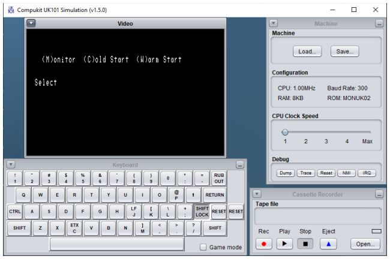

|
| Return to index |
This is a quick overview of how to run a simple program using the simulator. There is a lot more detail in the operation guide and in the Compukit UK101 Manual.
This example just runs a trivial BASIC program that prints a message onto the screen.
If you haven't already done so install the simulator and the related sample
programs and documentation by unzipping the runtime package into a
subdirectory on your machine.
Make sure you have Java 5 (or later) installed and working - try typing the
command java ‑version
at a terminal or command prompt
if you are not sure.
After unzipping the runtime package you will find these files and directories:
uk101-n.n.n.jarThe program JAR file readme.txtLatest information license.txtThe BSD license file docs/A copy of the latest documentation icons/Some icons that can be associated with the program if required samples/Sample programs, tapes, ROMs and properties files.
java -jar uk101-n.n.n.jar
On most systems you should also be able to double-click on the JAR file to launch the application.
The simulator should start and display a window containing several smaller windows something like this:
| Top left is video display |  | Top right is the machine control and configuration panel |
| Bottom left is keyboard for typing into the machine | Bottom right is the cassette recorder for loading and saving programs |
The keyboard window displays the layout of the real UK101 keyboard - you will notice that the layout is not identical to a standard PC keyboard, the most noticeable difference being the symbols on the top-row numeric keys. The simulation attempts to hide most of these differences, so that typing on the PC keyboard operates the UK101 correctly. See the keyboard operation pages for more details.
You can also operate the keyboard by clicking on keys with the mouse but this is rather tedious!
When the system starts or when it is reset the screen
will display a bootstrap start-up message and waits for a key to be pressed.
With the monitor ROM installed by default (known as the New Monitor
or MONUK02
) the initial screen will look something like the left
hand screen-shot below.
The system is waiting for one of the keys M (for Monitor), C (for Cold Start) or W (for Warm Start) to be pressed.
Ensure that the SHIFT LOCK key in the keyboard window is pressed
(which should be the default at start up, so you shouldn't have to do
anything) and press the C key to perform a Cold Start.
The system will then prompt for MEMORY SIZE? followed by
TERMINAL WIDTH?.
Press the RETURN key to accept default values for both these
prompts and the system should respond with some messages and an OK
prompt from the BASIC interpreter - see right hand screen-shot.
You are now ready for some authentic 1979-vintage BASIC programming!
You could try typing a simple program such as 10 PRINT "HELLO!"
followed by LIST to list it or RUN to
execute it.
Programs would normally be loaded from cassette tapes.
To see how this works, first type the command LOAD at the
BASIC OK prompt then press RETURN.
Not much appears to happen - you may notice the cursor has stopped
flashing - but the system is now waiting for input from the
cassette player.
Press the Open button on the cassette player window, and in the file selection dialog choose the samples folder, then the basic folder and then select the file called hello.basic. With the tape loaded in the cassette player press the Play button and you will see the program load into the machine, just as if it had been typed.
When the program finishes loading (hello.basic is just a two-line
program) you need to press Stop on the cassette player, then press
the SPACE bar on the keyboard.
Pressing the SPACE bar will end the loading mode and return to
accepting input from the keyboard - you should see the cursor flashing again.
Type RUN to execute the newly loaded program.
 |
If things go wrong you can reset the machine and return to the boot-up prompt. Another C for a Cold Start should get it all working again although a cold-start will always wipe out the contents of the memory.
To perform a reset you can either press the Reset button in the Debug section of the machine control panel, or you can use the RESET keys on the keyboard. On a real UK101 you had to press both RESET keys together to do the reset, on the simulator keyboard you simulate this by double-clicking on either one of the two keys.
| Tim Baldwin April 2011 tjb101@tinymail.co.uk |
Return to index
© Tim Baldwin 2010,2015 |